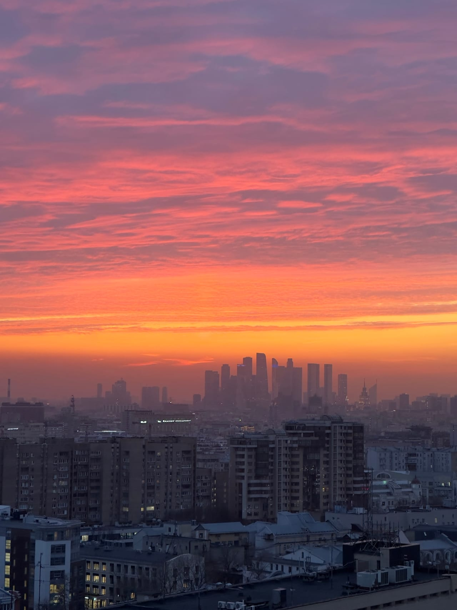

Статьи
Откуда лучший вид на Москва-Сити: крыши рядом с небоскрёбами
Четыре крыши каталога с ракурсами на деловой центр: целиком, сверху, почти вплотную и в паре со сталинской высоткой. Разбираем, чем они отличаются и когда башни смотрятся эффектнее.
Почему ракурс важнее высоты
Башни делового центра видно из половины Москвы, но впечатление сильно зависит от точки. С дальних крыш вид на Москва-Сити — это тонкий зубчатый силуэт на горизонте: красивый, но маленький. С ближних — стеклянная стена, которая занимает полкадра и давит масштабом. «Правильного» варианта нет: кому-то нужен весь кластер целиком для широкой панорамы, кому-то — детали фасадов и ощущение, что до башен можно дотянуться.
В нашем каталоге из десяти крыш четыре построены вокруг ракурса на Сити. Ниже — чем они отличаются и кому какая подойдёт.
Фили: кластер целиком, с воздухом вокруг
Крыша у метро Фили — самый сбалансированный вариант. Башни видны целиком, одной компактной группой, и вокруг остаётся небо: кадр не приходится резать, панорама складывается сама. Расстояние здесь работает на картинку — весь кластер помещается даже в кадр телефона без широкоугольного режима.
Подойдёт для первого знакомства: вы получаете классическую «открытку» делового центра и спокойную площадку, где можно просто сидеть и смотреть, как меняется свет.
Фили 60 этажей: деловой центр сверху
Обычно на небоскрёбы смотрят снизу вверх. Крыша «Фили 60 этажей» переворачивает привычный ракурс: с высоты шестидесятого этажа вы видите Москва-Сити сверху, а под ним и вокруг — город до самого горизонта.
Это самый «воздушный» вариант из четырёх: много неба, много города и ощущение полёта. Вечером внизу загораются улицы, и кадры получаются совсем не такими, как с обычных крыш.
Шелепиха: башни крупным планом
Если нужна крыша с видом на Сити, где небоскрёбы заполняют кадр, выбирайте крышу у метро Шелепиха. Девятиэтажный дом стоит в нескольких минутах от башен, поэтому отсюда видно то, что с дальних точек теряется: фактуру стекла, грани фасадов, то, как по-разному башни ловят свет.
Сильнее всего эта точка работает вечером: подсветка и светящиеся окна превращают деловой центр в огромную декорацию прямо перед вами. Высота здесь скромная, но именно близость делает кадры эффектными.
Римская: Сити в паре со сталинской высоткой
Четвёртый ракурс — для тех, кто любит контрасты. С крыши у метро Римская сталинская высотка и башни Москва-Сити попадают в один кадр: башня послевоенной эпохи ближе к вам, стеклянный деловой центр — на горизонте. Два поколения московских высоток в одной фотографии — сюжет, который сложно повторить с других точек.
Этот вид выбирают, когда хочется не просто посмотреть на небоскрёбы, а показать город в развитии: от «семи сестёр» до стеклянных башен.
Как выбрать из четырёх
Если коротко, шпаргалка такая:
- хочется классическую панораму и много воздуха — Фили;
- нужен редкий ракурс и город под ногами — «Фили 60 этажей»;
- важно, чтобы башни были крупно и совсем близко, — Шелепиха;
- снимаете сюжет про старую и новую Москву — Римская.
Сомневаетесь — напишите в Telegram-бот и опишите кадр, который хотите получить: подскажем, с какой площадки он складывается лучше. А если деловой центр нужен не главным героем, а деталью пейзажа, посмотрите крыши в центре города: например, с крыши у метро Таганская башни собираются в далёкий зубчатый силуэт на самом горизонте.
Днём, на закате или вечером: когда башни эффектнее
Короткий ответ: приходите к закату — за одну прогулку увидите сразу несколько состояний города. Подробнее:
- Днём башни графичны: стекло отражает небо, силуэты читаются чётко. Хорошее время для строгих архитектурных кадров, хотя панорама выглядит более плоской.
- На закате фасады ловят низкое солнце, небо даёт цвет, а кластер превращается в тёмный силуэт на яркой полосе — самый фотогеничный момент. Летом закат поздний, так что вечерние слоты удобно совпадают с золотым часом.
- Вечером включается подсветка и загораются окна: деловой центр светится, и даже кадры на телефон выглядят открыточно. Берите тёплый слой — на высоте прохладнее, чем на улице.
Фотосессия на фоне Москва-Сити
Для съёмки подходит любая из четырёх крыш, различается только роль башен в кадре. На Шелепихе Сити станет огромным фоном во весь кадр, на Филях — аккуратной панорамой за спиной, на Римской — историей про два времени, на «Фили 60 этажей» — городом под ногами. Фотосессия на фоне Москва-Сити не требует особой подготовки: приходите со своим фотографом или снимайте на телефон — часа обычно хватает на спокойную съёмку.
Как выбрать образы, что взять с собой и как построить съёмку за час — в отдельном гиде: фотосессия на крыше.
Сколько стоит и как записаться
Прогулка на любой крыше каталога стоит от 2000 ₽ за человека и длится 1 час; если площадка свободна, можно продлить ещё на час за 500 ₽ с человека. Точные цены по конкретным крышам показывает Telegram-бот.
Записаться просто: оставьте заявку в форме на главной странице или напишите в Telegram-бот — подтвердим свободное время. Точное место встречи сообщаем после подтверждения записи, заранее адреса крыш не публикуем. Подниматься будете с сопровождающим, по проверенному маршруту и с коротким инструктажем на площадке.
Что взять с собой
- удобную нескользящую обувь;
- тёплый слой — после заката на высоте свежо даже летом;
- телефон или камеру и свободное место в памяти: кадров с подсветкой будет много.
FAQ
Частые вопросы
С какой крыши Москва-Сити видно крупнее всего?
С крыши у метро Шелепиха: девятиэтажный дом стоит в нескольких минутах от небоскрёбов, и башни занимают почти весь кадр. Если хочется посмотреть на деловой центр сверху — выбирайте крышу «Фили 60 этажей».
В какое время башни Сити смотрятся эффектнее?
Приходите к закату: сначала стёкла ловят низкое солнце, потом включается подсветка и загораются окна. Днём башни выглядят графично, но панорама более плоская.
Можно ли устроить фотосессию на фоне башен?
Да. Приходите со своим фотографом или снимайте на телефон — часа обычно хватает, а если площадка свободна, прогулку можно продлить за 500 ₽ с человека за час.
Над городом